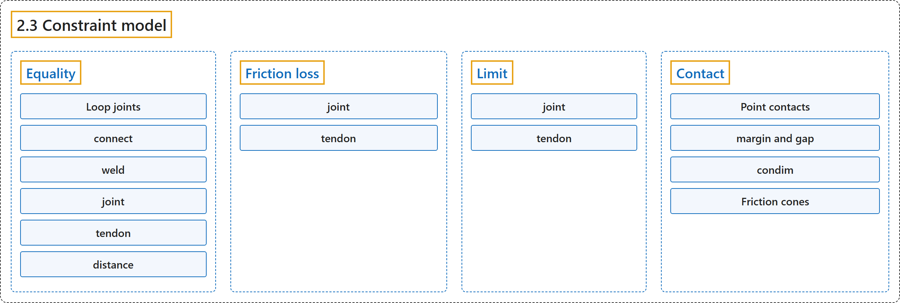

2.3 Constraint model
Classification

Glossary
| Term | Definition | 中文翻译 | Source |
|---|---|---|---|
| 2.3 Constraint model 约束模型 |
(context) "MuJoCo has a very flexible constraint model, which is nevertheless handled in a uniform way by the solver described later." | （语境）MuJoCo 有一个非常灵活的约束模型，但它由后面介绍的求解器统一处理。 | Google DeepMind, n.d., "Constraint model", para. 1 |
| Equality 等式约束 |
(context) "There are five types of equality constraints described next." | （语境）接下来介绍五种等式约束。 | Google DeepMind, n.d., "Equality", para. 3 |
| Loop joints 环路关节 |
"Among other applications, equality constraints can be used to create “loop joints”, i.e., joints that cannot be modeled via the kinematic tree." | 在其他用途之外，等式约束可用于构造“环路关节”，即无法通过运动学树建模的关节。 | Google DeepMind, n.d., "Equality", para. 2 |
| connect 连接约束 |
"This constraint connects two bodies at a point, effectively creating a ball joint outside the kinematic tree." | 这种约束在一点上连接两个刚体，相当于在运动学树之外创建一个球关节。 | Google DeepMind, n.d., "Equality", item 1 |
| weld 焊接约束 |
"This constraint welds two bodies together, suppressing all relative degrees of freedom between them." | 这种约束把两个刚体焊在一起，消除它们之间的所有相对自由度。 | Google DeepMind, n.d., "Equality", item 2 |
| joint 关节约束 |
"This constraint applies only to scalar joints: hinge and slide. It can be used to lock one joint into a constant position, or to couple two joints via a quartic polynomial." | 这种约束只适用于标量关节：铰链关节和滑动关节。它可用于把一个关节锁定在固定位置，或通过四次多项式耦合两个关节。 | Google DeepMind, n.d., "Equality", item 3 |
| tendon 肌腱约束 |
"This constraint is very similar to the joint constraint above, but applies to the length of tendons instead of the position of joints." | 这种约束与上面的关节约束非常相似，但作用于肌腱的长度，而不是关节的位置。 | Google DeepMind, n.d., "Equality", item 4 |
| distance 距离约束 |
(context) "Distance equality constraints were removed in MuJoCo version 2.2.2." | （语境）距离等式约束已在 MuJoCo 2.2.2 版中移除。 | Google DeepMind, n.d., "Equality", item 5 |
| Friction loss 摩擦损失 |
"Friction loss is also known as dry friction, or static friction, or load-independent friction (in contrast with Coulomb friction which scales with normal force)." | 摩擦损失也称为干摩擦、静摩擦或与载荷无关的摩擦（与随法向力变化的库仑摩擦相对）。 | Google DeepMind, n.d., "Friction loss", para. 1 |
| joint 关节摩擦损失 |
"Friction loss can be defined not only for scalar joints (slide and hinge), but also for ball joints which have 3 degrees of freedom, and free joints which have 6 degrees of freedom. When defined, it is applied independently to all degrees of freedom of the affected joint." | 摩擦损失不仅可以为标量关节（滑动关节和铰链关节）定义，也可以为有 3 个自由度的球关节和有 6 个自由度的自由关节定义。定义后，它独立地作用于所涉关节的所有自由度。 | Google DeepMind, n.d., "Friction loss", item 1 |
| tendon 肌腱摩擦损失 |
"Tendons are scalar quantities, thus defining friction loss for a tendon always adds one scalar constraint." | 肌腱是标量，因此为肌腱定义摩擦损失总是增加一个标量约束。 | Google DeepMind, n.d., "Friction loss", item 2 |
| Limit 限位 |
"Limits as well as contacts have a well-defined spatial residual, but unlike equality constraints they are uni-lateral, i.e. they introduce inequality rather than equality constraints." | 限位和接触一样有明确定义的空间残差，但与等式约束不同，它们是单边的，即引入的是不等式约束而不是等式约束。 | Google DeepMind, n.d., "Limit", para. 1 |
| joint 关节限位 |
"Limits can be defined for scalar joints (hinge and slide) as well as for ball joints." | 限位可以为标量关节（铰链关节和滑动关节）定义，也可以为球关节定义。 | Google DeepMind, n.d., "Limit", item 1 |
| tendon 肌腱限位 |
"Tendon are scalar quantities and their limits are treated as described above." | 肌腱是标量，它们的限位按上述方式处理。 | Google DeepMind, n.d., "Limit", item 2 |
| Contact 接触 |
"Contacts are the most elaborate constraint type, both in terms of specifying them in the model and in terms of the computations that need to be performed." | 接触是最复杂的约束类型，无论是在模型中指定它们，还是在需要进行的计算方面。 | Google DeepMind, n.d., "Contact", para. 1 |
| Point contacts 点接触 |
"MuJoCo works with point contacts, defined geometrically by a point between two geoms and a spatial frame centered at that point, both expressed in global coordinates." | MuJoCo 使用点接触，它在几何上由两个 geom 之间的一个点和以该点为中心的空间坐标系定义，两者都用全局坐标表示。 | Google DeepMind, n.d., "Contact", para. 2 |
| margin and gap 余量与间隙 |
"Together they define three regimes of contact detection and force generation, illustrated in the figure below." | 它们一起定义了接触检测和力生成的三种状态，如下图所示。 | Google DeepMind, n.d., "margin and gap", para. 1 |
| No contact 无接触 |
"No contact (distance > margin + gap): The geom surfaces, including their gap buffers, are not overlapping. No contact is generated." | No contact（distance > margin + gap）：geom 表面（包括其间隙缓冲）没有重叠。不生成接触。 | Google DeepMind, n.d., "margin and gap", item 1 |
| Inactive contact 非活动接触 |
"Inactive contact (margin < distance ≤ margin + gap): A contact is detected and included in mjData.contact, but no contact force is generated (efc_address = -1)." | Inactive contact（margin < distance ≤ margin + gap）：检测到接触并纳入 mjData.contact，但不生成接触力（efc_address = -1）。 | Google DeepMind, n.d., "margin and gap", item 2 |
| Active contact 活动接触 |
"Active contact (distance ≤ margin): The contact is active and constraint forces are generated." | Active contact（distance ≤ margin）：接触处于活动状态，并生成约束力。 | Google DeepMind, n.d., "margin and gap", item 3 |
| condim 接触维数 |
"The condim parameter determines the contact type, and has the following meaning:" | condim 参数决定接触类型，含义如下： | Google DeepMind, n.d., "condim", para. 1 |
| condim = 1 condim = 1 |
"This corresponds to a frictionless contact and adds only one scalar constraint." | 这对应于无摩擦接触，只增加一个标量约束。 | Google DeepMind, n.d., "condim", item 1 |
| condim = 3 condim = 3 |
"This is a regular frictional contact, which can generate normal force as well as a tangential friction force opposing slip." | 这是常规的摩擦接触，可以产生法向力以及阻碍滑动的切向摩擦力。 | Google DeepMind, n.d., "condim", item 2 |
| condim = 4 condim = 4 |
"In addition to normal and tangential force, this contact can generate torsional friction torque opposing rotation around the contact normal, corresponding to a torque generated by a contacting surface patch." | 除了法向力和切向力，这种接触还能产生阻碍绕接触法线转动的扭转摩擦力矩，对应于接触面片产生的力矩。 | Google DeepMind, n.d., "condim", item 3 |
| condim = 6 condim = 6 |
"This contact can oppose motion in all relative degrees of freedom between the two geoms." | 这种接触可以阻碍两个 geom 之间所有相对自由度上的运动。 | Google DeepMind, n.d., "condim", item 4 |
| Friction cones 摩擦锥 |
(context) "Now we describe the friction cones and the corresponding Jacobians more formally." | （语境）现在更形式化地介绍摩擦锥及相应的雅可比矩阵。 | Google DeepMind, n.d., "Friction cones", para. 1 |
References
Google DeepMind. (n.d.). Computation. MuJoCo Documentation (Version 3.17.0). Retrieved October 31, 2026, from https://mujoco.readthedocs.io/en/stable/computation/index.html